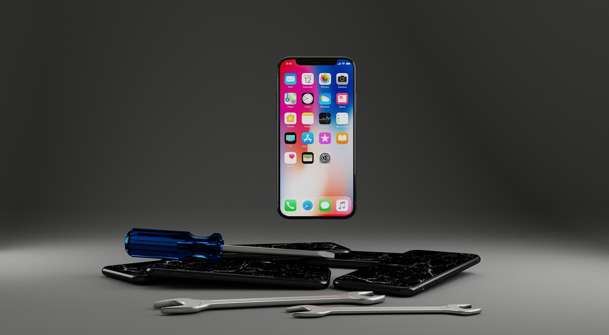

Pantallas, baterías, software y fundas personalizadas con tu diseño favorito.
📲 Cotizar por WhatsAppCambio de pantalla, batería, puerto de carga, cámara, software y más.
Diseña tu funda con fotos, frases o tu estilo favorito.
Limpieza de software, eliminación de virus y mejora del rendimiento del dispositivo.
La mayoría de reparaciones se realizan en menos de 1 hora.
Utilizamos repuestos certificados y herramientas profesionales.
Todas nuestras reparaciones cuentan con garantía.
iPhone • Samsung • Xiaomi • Motorola • Huawei • Oppo
"Excelente servicio. Cambiaron la pantalla de mi celular en menos de una hora."
- Carlos M."Muy buena atención y precios accesibles. Recomiendo FixPhone."
- Andrea R.FixPhone es una empresa especializada en reparación técnica y personalización de dispositivos móviles, comprometida con ofrecer soluciones rápidas, seguras y garantizadas para nuestros clientes.
Contamos con más de 5 años de experiencia en el sector tecnológico, empleando repuestos de alta calidad y herramientas profesionales que garantizan la durabilidad de cada intervención técnica.
Nuestra prioridad es extender la vida útil de los equipos, optimizar su rendimiento y brindar una atención personalizada que combine eficiencia técnica con excelencia en servicio.
📍 Ubicación: Lima, Perú
Correo Electrónico: contacto@fixphone.com
WhatsApp +51 939 253 063